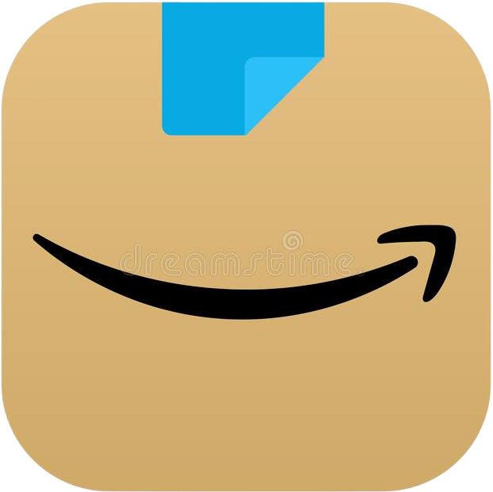
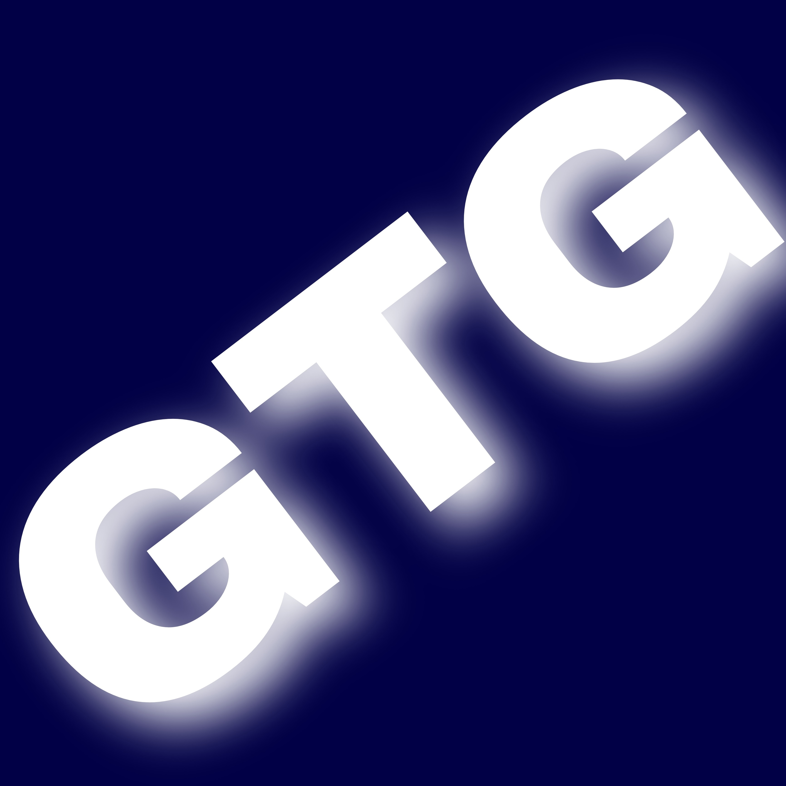
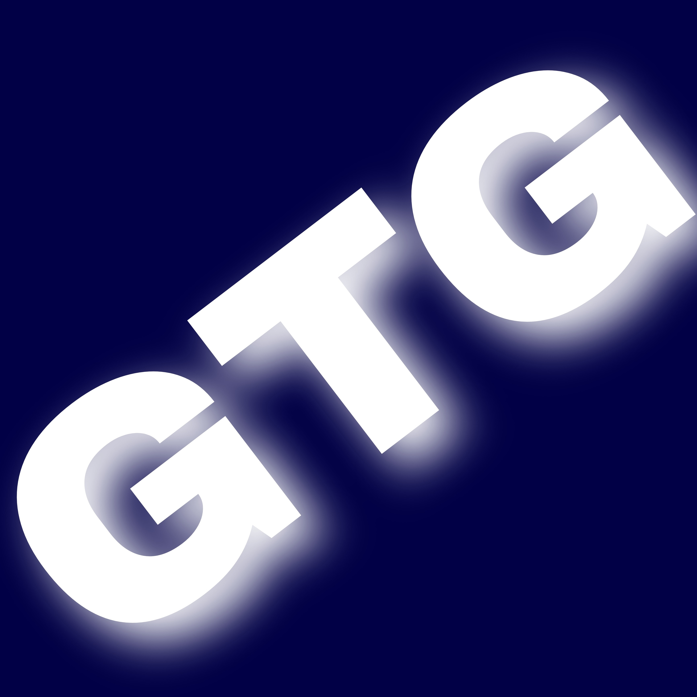
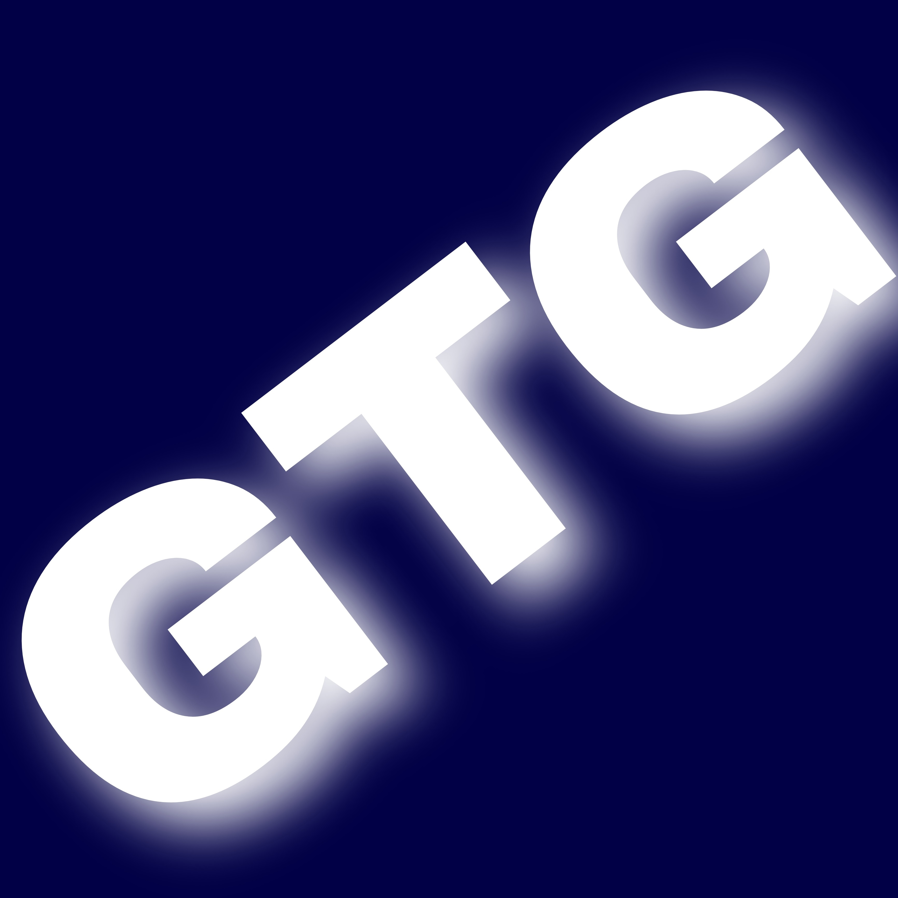
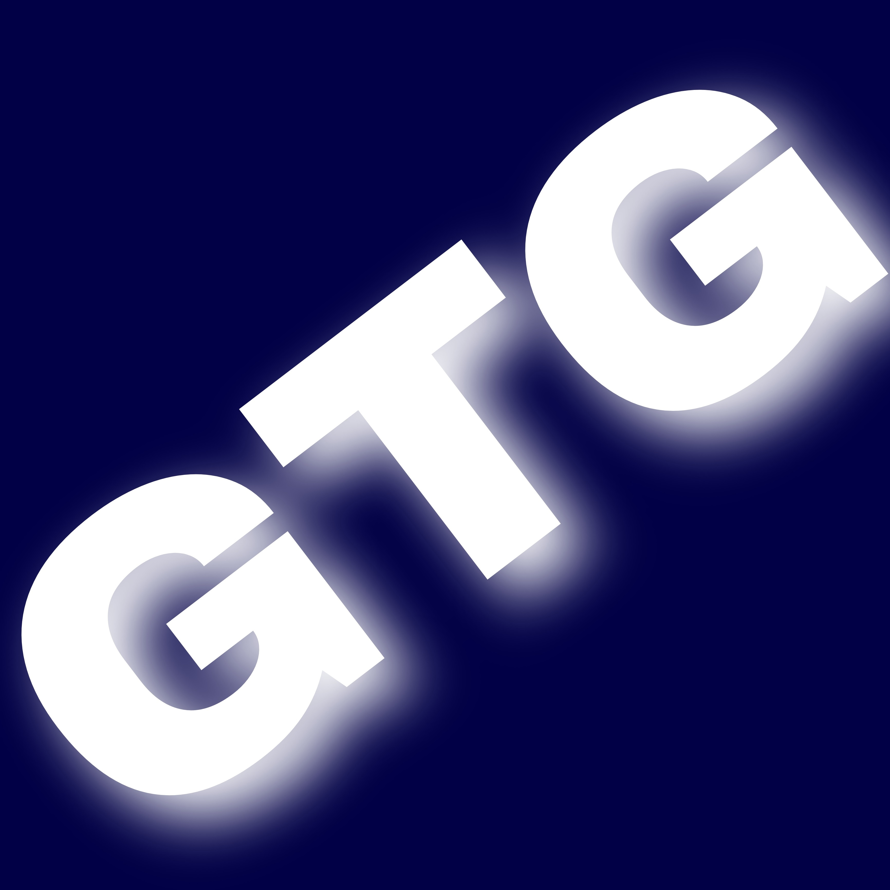

 



GOcot is a free software uses to do various tasks such as low level computing , high level computing , working with images , high quality tools etc . GOcot offers you a wide range of tools which you can use to build & edit your project for free of cost e.g :-custom image editor , custom basic video editor , GOcot progreamming language , GOcot API for developers etc . GOcot is a very trusted software by professionals . GOcot offers you best tutorials for learning and start earnings with your projects .
You should choose GOcot only because GOcot will give you better tools for your project and entainment , as you can do :-